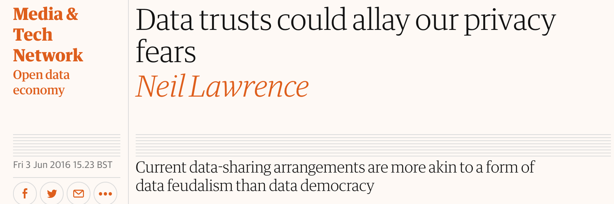

Challenges for Data Science in Healthcare
Neil D. Lawrence
There are three types of lies: lies, damned lies and statistics
??
There are three types of lies: lies, damned lies and statistics
Benjamin Disraeli
There are three types of lies: lies, damned lies and statistics
Benjamin Disraeli 1804-1881
Mathematical Statistics
- 'Founded' by Karl Pearson (1857-1936)

There are three types of lies: lies, damned lies and 'big data'
Neil Lawrence 1972-?
'Mathematical Data Science'
- 'Founded' by ? (?-?)

What is Machine Learning?
\[ \text{data} + \text{model} \rightarrow \text{prediction}\]
- \(\text{data}\) : observations, could be actively or passively acquired (meta-data).
- \(\text{model}\) : assumptions, based on previous experience (other data! transfer learning etc), or beliefs about the regularities of the universe. Inductive bias.
- \(\text{prediction}\) : an action to be taken or a categorization or a quality score.
- Royal Society Report: Machine Learning: Power and Promise of Computers that Learn by Example
Machine Learning as the Driver ...
... of two different domains
Data Science: arises from the fact that we now capture data by happenstance.
Artificial Intelligence: emulation of human behaviour.
What does Machine Learning do?
- ML Automates through Data
- Strongly related to statistics.
- Field underpins revolution in data science and AI
With AI: logic, robotics, computer vision, speech
With Data Science: databases, data mining, statistics, visualization
Background: Big Data
The pervasiveness of data brings forward particular challenges.
Those challenges are most sharply in focus for personalized health.
Particular opportunities, in challenging areas such as mental health.
Evolved Relationship
Evolved Relationship
Evolved Relationship
"Embodiment Factors"

|

|
|
| compute | ~10 gigaflops | ~ 1000 teraflops? |
| communicate | ~1 gigbit/s | ~ 100 bit/s | (compute/communicate) | 10 | ~ 1013 |
Evolved Relationship
Effects
This phenomenon has already revolutionised biology.
Large scale data acquisition and distribution.
Transcriptomics, genomics, epigenomics, 'rich phenomics'.
Great promise for personalized health.
Societal Effects
Automated decision making within the computer based only on the data.
A requirement to better understand our own subjective biases to ensure that the human to computer interface formulates the correct conclusions from the data.
Particularly important where treatments are being prescribed.
But what is a treatment in the modern era: interventions could be far more subtle.
Societal Effects
Shift in dynamic from the direct pathway between human and data to indirect pathway between human and data via the computer
This change of dynamics gives us the modern and emerging domain of data science
Examples
Election polls (UK 2015 elections, EU referendum, US 2016 elections)
Clinical trials vs personalized medicine: Obtaining statistical power where interventions are subtle. e.g. social media
Also need
- More classical statistics!
- Like the 'paperless office'
A better characterization of human (see later)
- Larger studies (100,000 genome)
- Combined with complex models: algorithmic challenges-->
The Software Crisis
The major cause of the software crisis is that the machines have become several orders of magnitude more powerful! To put it quite bluntly: as long as there were no machines, programming was no problem at all; when we had a few weak computers, programming became a mild problem, and now we have gigantic computers, programming has become an equally gigantic problem.
Edsger Dijkstra, The Humble Programmer
The Data Crisis
The major cause of the data crisis is that machines have become more interconnected than ever before. Data access is therefore cheap, but data quality is often poor. What we need is cheap high quality data. That implies that we develop processes for improving and verifying data quality that are efficient.
There would seem to be two ways for improving efficiency. Firstly, we should not duplicate work. Secondly, where possible we should automate work.
Me
Quantifying the Value of Data
There's a sea of data, but most of it is undrinkable

We require data-desalination before it can be consumed!
Data
- 90% of our time is spent on validation and integration (Leo Anthony Celi)
- "The Dirty Work We Don't Want to Think About" (Eric Xing)
- "Voodoo to get it decompressed" (Francisco Giminez?)
- In health care clinicians collect the data and often control the direction of research through guardianship of data.
Value
- How do we measure value in the data economy?
- How do we encourage data workers: curation and management
- Incentivization for sharing and production.
- Quantifying the value in the contribution of each actor.
Data Readiness Levels
Three Grades of Data Readiness:
Grade C - accessibility
Grade B - validity
Grade A - usability
Accessibility: Grade C
- Hearsay data.
- Availability, is it actually being recorded?
- privacy or legal constraints on the accessibility of the recorded data, have ethical constraints been alleviated?
- Format: log books, PDF ...
- limitations on access due to topology (e.g. it's distributed across a number of devices)
- At the end of Grade C data is ready to be loaded into analysis software (R, SPSS, Matlab, Python, Mathematica)
Validity: Grade B
- faithfulness and representation
- visualisations.
- exploratory data analysis
- noise characterisation.
- Missing values.
- Schema alignment, record linkage, data fusion?
- Example, was a column or columns accidentally perturbed (e.g. through a sort operation that missed one or more columns)? Or was a gene name accidentally converted to a date?
- At the end of Grade B, ready to define a candidate question, the context, load into OpenML
Usability: Grade A
- The usability of data
- Grade A is about data in context.
- Consider appropriateness of a given data set to answer a particular question or to be subject to a particular analysis.
- Data integration?
- At the end of Grade A it's ready for data platforms such as RAMP, Kaggle, define a task in OpenML.
Understanding Patient Data
WannaCry
- The difference between capability and intent.

§

Conclusion
- Data science offers a great deal of promise for healthcare
- There are challenges and pitfalls
- Here discussed two solutions for the Data Crisis
- Data Readiness Levels
- Data Trusts
Thanks!
- twitter: @lawrennd
- blog: http://inverseprobability.com
- Guardian articles